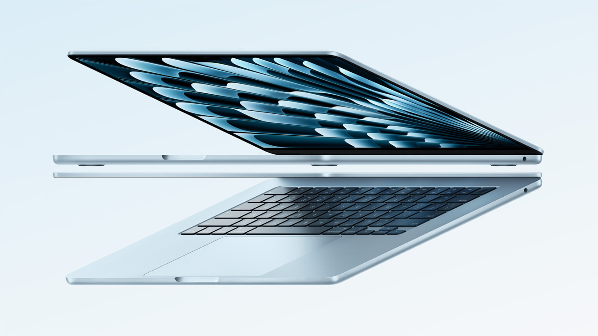

Min computer
Type
Denne MacBook Air er udstyret med den kraftfulde M4-chip, der leverer enestående ydeevne i en kompakt størrelse. Liquid Retina-skærmen giver en fantastisk billedkvalitet, mens Apple Intelligence tilbyder innovative måder at tilpasse din oplevelse på.
Specifikationer
Design
Med en højde på 1,13 cm og en vægt på kun 1,24 kg er MacBook Air designet til at arbejde på farten. På trods af beskedne dimensioner og lave vægt går den ikke på kompromis med ydeevnen.
Apple M4 system-on-chip
Denne MacBook kommer med Apples specialdesignede Apple M4 system-on-chip med en 10-kernet CPU, 8-kernet GPU, som er bygget på en revolutionerende 3nm-proces, der gør det muligt at indsætte 25 milliarder transistorer for utrolig ydeevne og strømeffektivitet. Den har også Neural Engine og en samlet hukommelsesarkitektur, så en enkelt pulje af cache-hukommelse kan tilgås øjeblikkeligt på tværs af chippen. Gør dig klar til lynhurtig billed-/videobehandling, rendering og også en fordybende spiloplevelse.
Skærm
Den 13,6" Liquid Retina-skærm bruger et skarpt IPS-panel med understøttelse af 1 milliard farver. Med højere kontrast og et bredere P3-farveområde leverer skærmen enestående farvegengivelse og imponerende resultater for professionelle fotografer, designere og grafikere. True Tone-balancering justerer skærmens farvetone til omgivelsernes belysning, så dine øjne får en behagelig oplevelse uden træthed.
Touch ID
En Touch ID-sensor er integreret i tænd/sluk-knappen. Sensoren genkender dit fingeraftryk og giver dig mulighed for sikkert at låse din MacBook op. Du kan også bruge Touch ID til at foretage betalinger via Apple Pay. Sensoren bruger en Secure Enclave coprocessor til robust fil-kryptering on-the-fly, sikker opstartsproces, mere glidende SSD-lagerplads-styring og bredere Siri stemmestyringsfunktioner.
macOS Sequoia
macOS Sequoia tilbyder nye og forbedrede funktioner, der giver dig mulighed for at få mest muligt ud af din bærbare computer. Udnyt Apple Intelligence fuldt ud, som bruger din egen personlige stil, mens den hjælper dig med nye skrive- og kommunikationsværktøjer, skaber brugerdefinerede billeder og emojis, meget mere komplekse funktioner til Siri og så meget mere, der vil hjælpe dig med at udtrykke dig selv.
Flere funktioner
- 2x Thunderbolt / USB 4-porte
- 3,5 mm hovedtelefonstik
- MagSafe 3-port
- Superhurtigt WiFi 6E, Bluetooth 5.3
- 1080p FaceTime Full HD-kamera med forbedret billedbehandling
- Op til 18 timers batterilevetid
- Stereohøjttalere, tre studiokvalitetsmikrofoner
- Sensor for omgivende lys
- USB-C-strømadapter medfølger
- USB-C til MagSafe 3-kabel medfølger